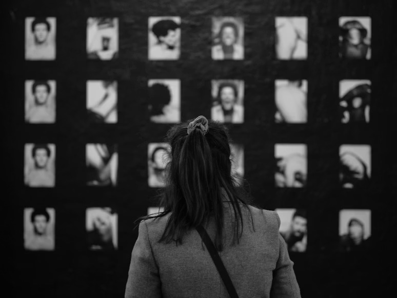

Rise of the Consumer Camera
As cameras continue to became more affordable and portable, everyday users have gained the ability to document their own lives. This shift has democratized image making by giving personal moments cultural visibility. Consequently, photography moved from being a specialized practice to a shared, daily activity.
Photography as Participation
With accessibility of photography increasing, it became a way for people to express themselves and shape their identities online and offline. Photos from early digital snapshots to social media posts changed how people communicate visually, with images becoming a universal language for sharing experiences.
- Photos can directly influence self identity, community, and social interactions.
- Visual communication eventually became central to everyday expression.

Creative Culture & Visual Production
With the rise of affordability in cameras, this empowered people to document objects, create product shots, and experiment with artistic photography. From this, new visual cultures emerged in DIY creativity and early online image communities, and photography eventually shifted from simply capturing moments to actively crafting meaning through visual means.
- Everyday users can now influence and shape visual trends and aesthetics both inadvertently and directly
- A rise of at-home product and creative photography